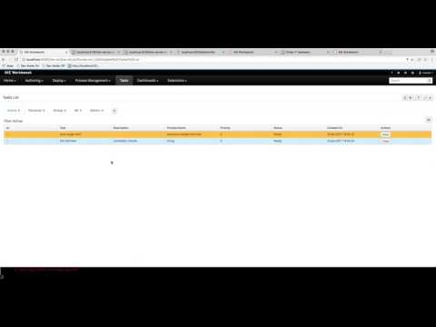

KIE Server Router integrated with workbench
- find the right servers to deal with requests
- aggregate data from various servers
- remove burden from clients to know the location of KIE Servers
- and more…
- router will connect to workbench controller
- notifies when started
- notifies when shutting down
- server template is required for the router – if none created before it will self-register itself
- all containers deployed behind the router must be in router’s server template so all of them can be used in terms of forms, images and data
- single workbench
- single router
- KIE Server for HR process – running on dedicated server instance (:8180 port)
- KIE Server for Evaluation process – running on dedicated server instance (:8280 port)

Moreover, it aggregates the results for queries e.g. process instance, process definition or tasks so there is no need to go over individual servers to figure out what instances are running and to get the details of them. Even dashboard does work via router, though it still has some issues as it expects to have a single row instead of aggregate of all servers so this is still something to address…
The only limitation at the moment is sorting capabilities of the aggregated results. In general router is capable of doing aggregate sort but the problem here is that the data returned when used through workbench are in raw format and thus router has not information what field is what and thus sorting is in the way that individual servers returned. Though it does support paging in normal fashion.
… if you want to give it a try yourself
there is small trick to start it in particular sequence:
- workbench first
- ./standalone.sh
- router (without the controller property)
- java -jar target/kie-server-router-proxy-7.0.0-SNAPSHOT.jar
- kie servers (with router property)
- /standalone.sh –server-config=standalone-full.xml -Djboss.socket.binding.port-offset=100 -Dorg.kie.server.id=hr-server -Dorg.kie.server.location=http://localhost:8180/kie-server/services/rest/server -Dorg.kie.server.router=http://localhost:9000
- restart router with controller property
- java -Dorg.kie.server.controller=http://localhost:8080/kie-wb/rest/controller -jar target/kie-server-router-proxy-7.0.0-SNAPSHOT.jar